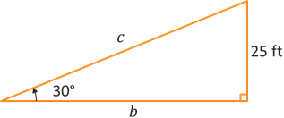
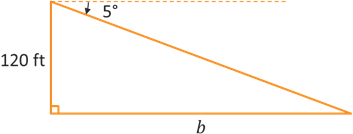

Right Triangle Trigonometry
Trigonometric Functions
Trigonometric Functions
Let's now try to apply what we have learned so far to solve some applications involved right triangles. Before we do so, there are a couple terms that we need to introduce.
The angle of elevation is the amount of rotation from the horizontal needed to look upward towards a specified point or object.
The angle of depression is the amount of rotation from the horizontal needed to look downward towards a specified point or object.
Note that when solving problems involving angles of elevation or depression, we will usually be working with acute angles within right triangles so we can ignore the sign of the angles based on the direction of rotation. This is because the non-right angles within a right triangle are always acute, or between 0° and 90°.
Example: An inclined ramp for a movie stunt has a height of 25 feet and a 30° angle of elevation. Give exact values.
Let's start by drawing a graph to illustrate the problem and its given values. The ramp will be a right triangle with vertical height of 25 feet and a horizontal side of length \(b\) for the ground. The hypotenuse of length \(c\) forms a 30° angle with the horizontal side \(b\).
The ramp is the hypotenuse of the right triangle and the vertical side of 25 feet is opposite the given angle. When working with the opposite side and hypotenuse, we want to use sine.
\[\begin{align*} \sin(\theta) &= \frac{\text{opp}}{\text{hyp}} \\ \sin(30^{\circ}) &= \frac{25}{c} \end{align*}\]We just learned that \(\sin(30^{\circ}) = \frac{1}{2}\), so substitute \(\frac{1}{2}\) into the left side of the equation for \(\sin(30^{\circ})\). This creates a proportion which we can solve by cross multiplying and dividing to isolate \(c\).
\[\begin{align*} \frac{1}{2} &= \frac{25}{c} \\ 1 \cdot c &= 2 \cdot 25 \\ c &= 50 \end{align*}\]So the ramp surface has a length of 50 feet.
The horizontal side of the triangle would be adjacent to the given angle. Since we now know the lengths of the opposite side and the hypotenuse, we could use either tangent or cosine, respectively, to find \(b\). We also now know the lengths of 2 sides of the right triangle, so we could instead use Pythagorean's Theorem. For now, let's use cosine which gives a relationship between the adjacent side and the hypotenuse.
\[\begin{align*} \cos(\theta) &= \frac{\text{adj}}{\text{hyp}} \\ \cos(30^{\circ}) &= \frac{b}{50} \end{align*}\]We just learned that \(\cos(30^{\circ}) = \frac{\sqrt{3}}{2}\), so substitute \(\frac{\sqrt{3}}{2}\) into the left side of the equation for \(\cos(30^{\circ})\). This creates a proportion which we can solve by cross multiplying and dividing to isolate \(b\).
\[\begin{align*} \frac{\sqrt{3}}{2} &= \frac{b}{50} \\ 2 \cdot b &= 50 \cdot \sqrt{3} \\ b &= 25\sqrt{3} \end{align*}\]So the horizontal length of the ramp is \(25\sqrt{3}\) feet.
We already know that slope can be described as "rise over run." The vertical side gives us the rise and the horizontal side gives us the run.
\[m = \frac{\text{rise}}{\text{run}} = \frac{25}{25\sqrt{3}} = \frac{1}{\sqrt{3}}\]Notice that the fraction \(\frac{25}{25\sqrt{3}}\) is also equal to \(\frac{\text{opp}}{\text{adj}}\), which means the slope is the same as the tangent of the angle of elevation. We just learned that \(\tan(30^{\circ}) = \frac{1}{\sqrt{3}}\), so we could also compute the slope of the ramp as follows.
\[m = \tan(\theta) = \tan(30^{\circ}) = \frac{1}{\sqrt{3}}\]So the slope of the ramp is \(\frac{1}{\sqrt{3}}\), which means the ramp goes up by 1 ft for each horizontal length of \(\sqrt{3}\) ft.
Example: A forest ranger is stationed in a lookout tower that is 120 feet tall. The ranger observes smoke rising up through the trees in the distance with an angle of depression of 5°. Assuming the base of the tower and the fire are at the same altitude, how far is the fire from the tower? Round your answer to 2 decimal places.
Let's start by drawing a graph to illustrate the problem and its given values. Let's assume that the tower is perpendicular to the ground, which is horizontal, and that the line of sight from the ranger to the fire forms the hypotensue of the right triangle. The vertical side is 120 feet and we can label the bottom side as \(b\) to represent the horizontal distance. Since the 5° angle represents a downward rotation from the horizontal, it will actually be located outside the triangle above the hypotenuse.
The 5° angle is complementary to the top angle inside the triangle, which means this top angle must be 85°. From this angle, the opposite side has length \(b\) and the adjacent side has length 120 ft. The opposite and adjacent sides of a given angle are related by tangent.
\[\begin{align*} \tan(\theta) &= \frac{\text{opp}}{\text{adj}} \\ \tan(85^{\circ}) &= \frac{b}{120} \\ 120 \cdot \tan(85^{\circ}) &= b \\ 1371.61 &= b \end{align*}\]So the fire is approximately 1,371.61 feet away from the base of the tower.
Caution: Make sure that your calculator is set to Degree mode before computing the final answer. If it is in Radian mode, then you will likely get an incorrect answer.
Some practice examples are provided in the following handout, with the completed solutions below.
©2025 M4thG33x (new window) Some Rights Reserved.